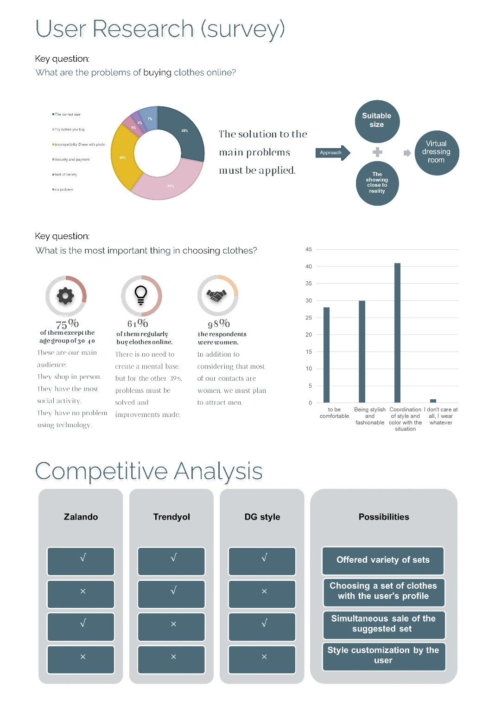
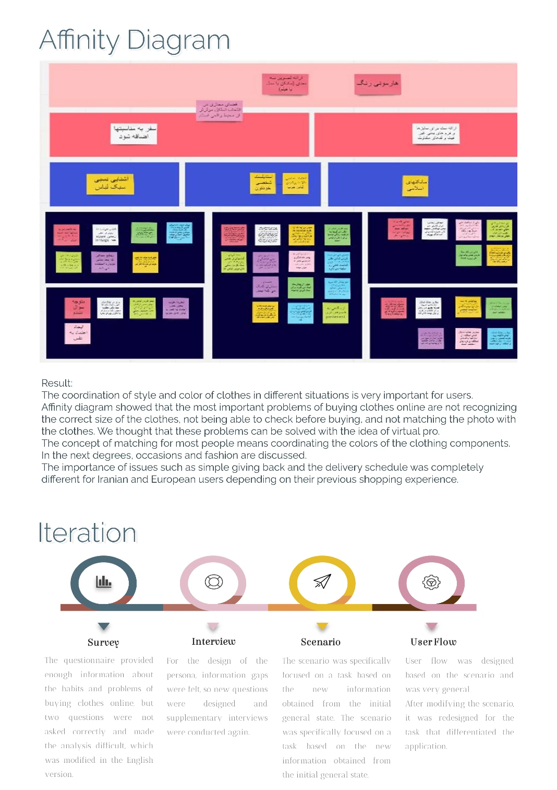
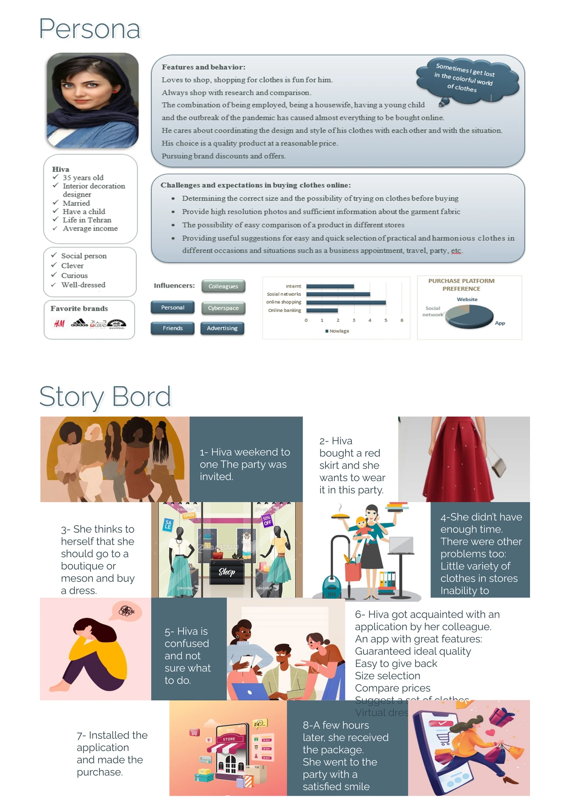
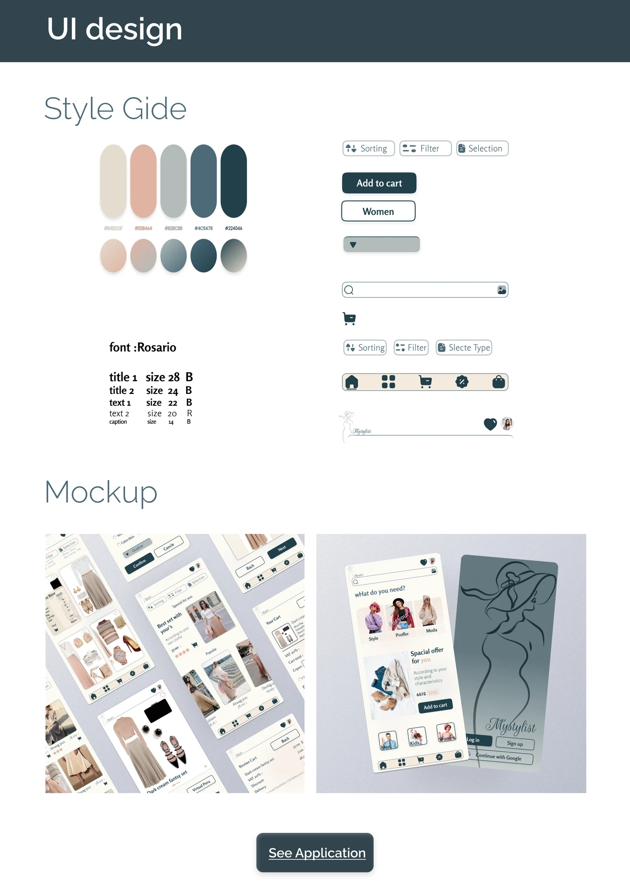
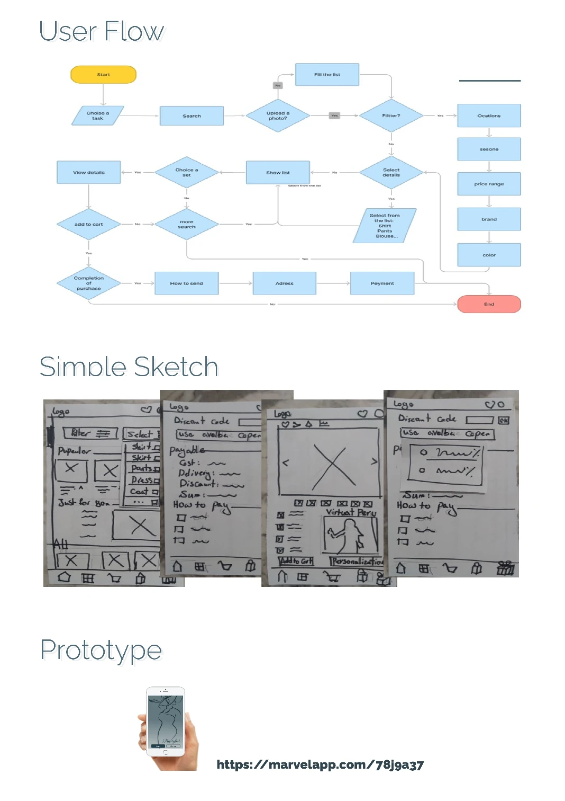
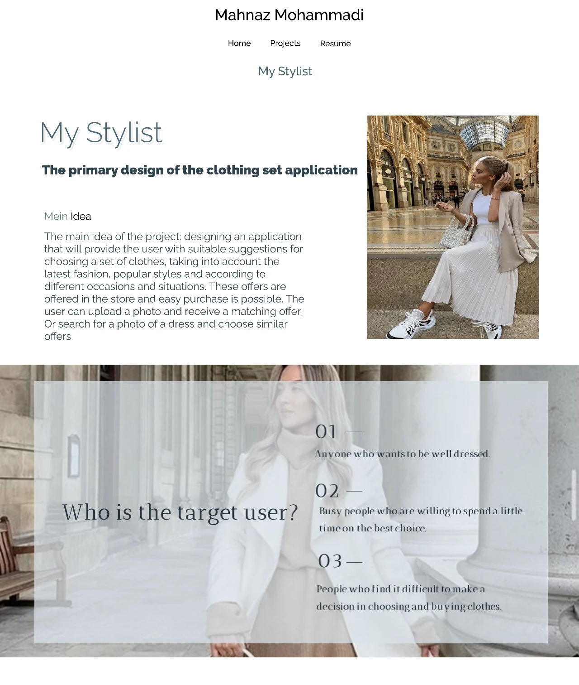

Overview
My Stylist is a clothing application for online shoppers who face choice-overload: endless catalogs, similar items, and no personal guidance. The app pairs browsing with styling suggestions so users can decide confidently instead of endlessly scrolling.
Competitive Analysis
Benchmarked against Zalando, Trendyol, and DG Style: strong logistics and catalogs, but weak personal curation and outfit-building. My Stylist differentiates with a stylist-driven feed and saved looks.
Style Guide
Warm neutrals keep the interface calm; a rose accent adds a fashion-forward touch.
Process
- 01
Survey & Research
Surveyed frequent online shoppers about discovery habits, drop-off reasons, and styling needs.
- 02
Affinity Diagram
Clustered findings into themes: choice-overload, fit anxiety, and lack of styling context.
- 03
Persona — Hiva
Synthesized the primary persona, an online clothing shopper facing choice-overload.
- 04
User Flow
Mapped the browse → style → compare → purchase flow to remove decision dead-ends.
- 05
Wireframes
Low-fidelity screens for the styled feed, product detail, and saved looks.
- 06
UI Design
Applied the warm-neutral + rose style guide with the Rosario typeface for a friendly voice.
- 07
Prototype
Interactive Figma prototype validated with peers; iteration focused on the comparison view.
Design Screens




